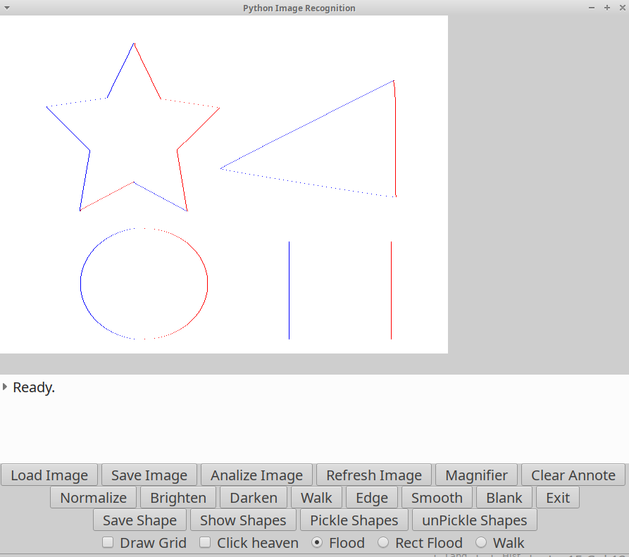

The GUI Drives the 'C' imgrec python extension. Not all aspects are ported to 'C', but they are easily doable.
Used to work on python 2 ... ported it to python 3
GNU / Linux:
Usual (autoconf) ./configure and make cycle works
A flood fill algorithm is extended to emit coordinates of the flood fill terminal points. This creates a 2 dimensional array that follows the object outline.
This outline is then normalized by array size and magnitude, creating a uniform structure, ideal for shape comparison. (See: algorithm/norm_outline.py)
This is all happening in ONE pass. Perfect algorithm for embedded solutions.

The image below is a real world example. The outline is clearly recognizable by the shape comparison algorithm.
No, this is not a suggestion, but a possibility. In a single pass we got the following:

// EOF